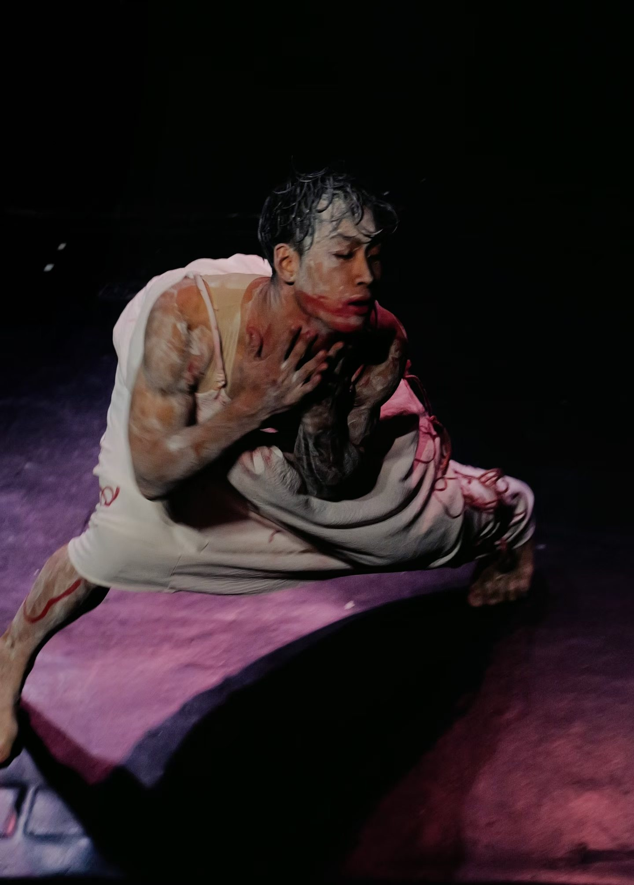
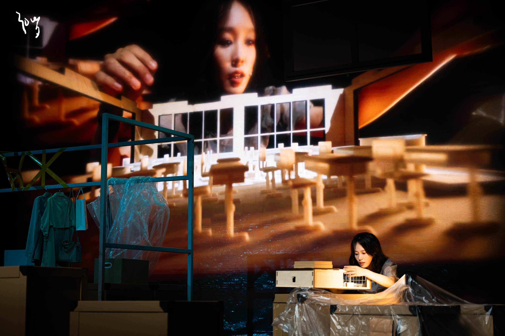
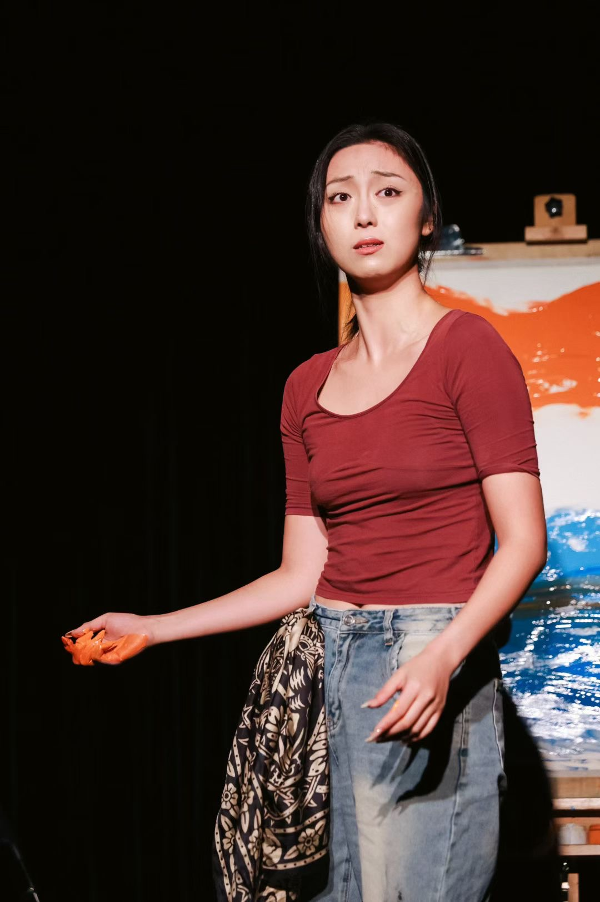
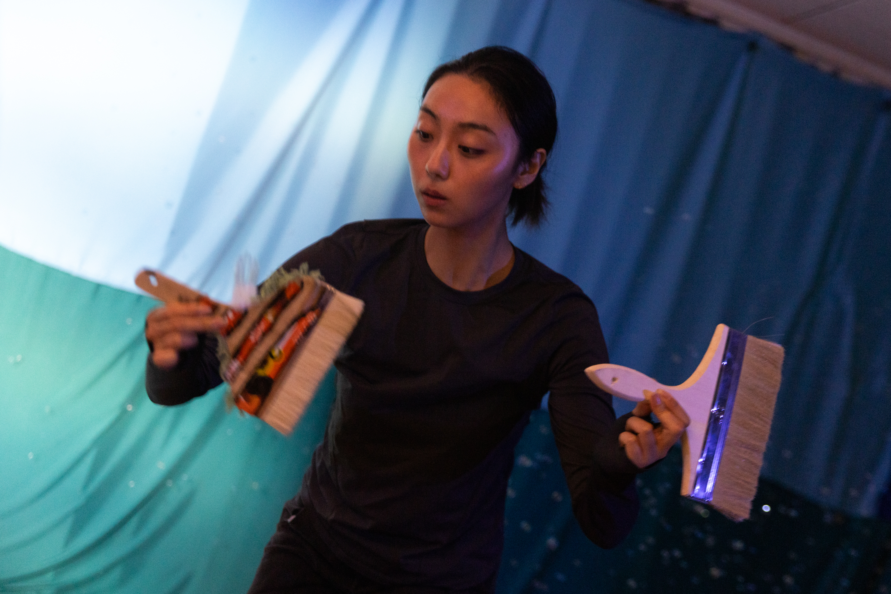
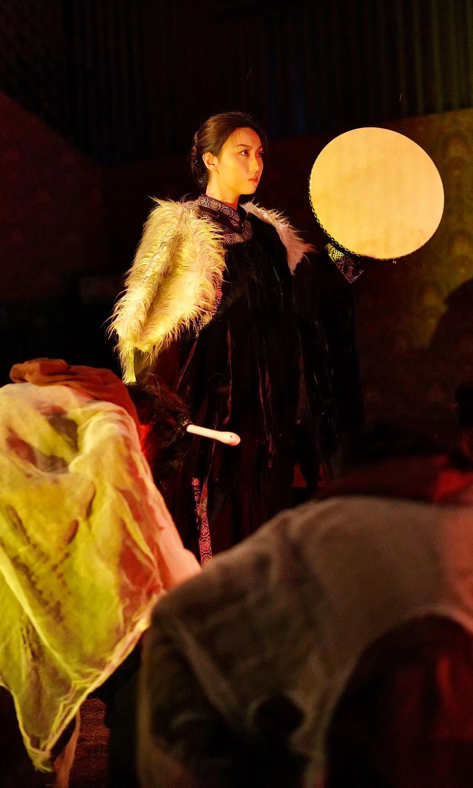
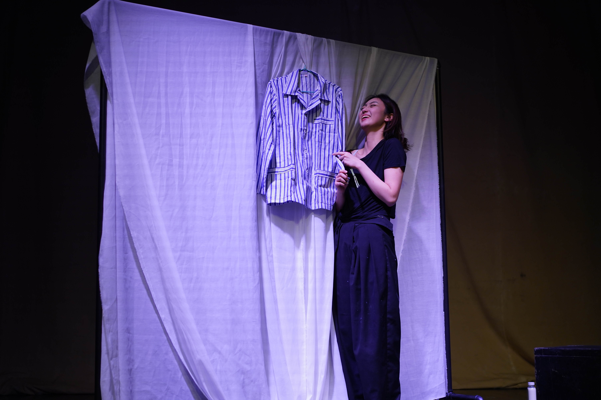

01 / WORK
An archive of works.
Works are held here as complete artistic worlds, across roles and forms.

《心脏乐队》

《三十岁独角戏》

《先生，黑色不是阳光明媚》

环保戏剧
《世界树·Hi Yax》
《后现代爱情图鉴》

《人虎》

《忘川》
Further project materials will be added as the archive grows.